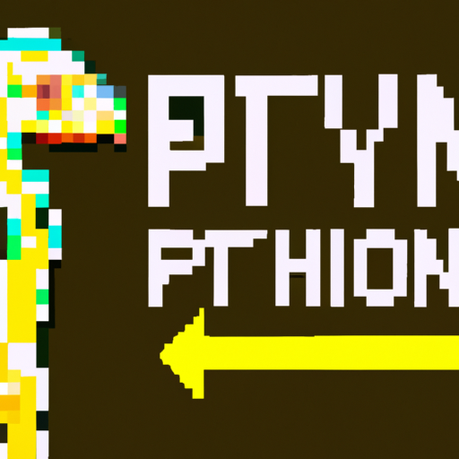

The Future of python and AI
Artificial Intelligence (AI) is changing the world of technology, and Python is at the forefront of this change. With the growth of AI-related technologies, Python is becoming an increasingly important language for developers to understand. Python is one of the most versatile and powerful programming languages available today, so it makes sense that it’s becoming the language of choice for AI applications.
Python has become a major player in AI because of its versatility and scalability. Python has a large library of packages that make it easy to develop AI-powered applications. These packages include scikit-learn, TensorFlow, Keras, and PyTorch. These libraries provide powerful tools for developers to quickly create AI-powered applications.
The future of AI is bright, and Python is likely to play an even bigger role. Python’s scalability and versatile libraries make it a great choice for developing AI-powered applications. As AI technology continues to evolve, Python will be at the forefront of this revolution. With its powerful AI libraries, Python will be essential for developers to create the next generation of AI-powered applications.